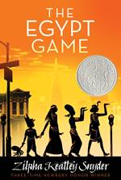

Let's have fun!
Here's a list of five mystery books for children, old and new, that either inspired me while I was writing it or that I think you'll love if you enjoy adventures.
Here's a list of five mystery books for children, old and new, that either inspired me while I was writing it or that I think you'll love if you enjoy adventures.
| The Guggenheim Mystery is about three kids who run away to solve a museum mystery. This is partly because when I was a kid one of my favourite books was From the Mixed-Up Files, which (funnily enough) is about two kids who run away and end up solving a museum mystery. It's set in the Met Museum, just down the road from the Guggenheim, and is narrated by one of the most brilliant main characters ever. If you secretly want to live in a museum and lead a more mysterious and exciting life, this book is for you. |
| I love Encyclopedia Brown. He's a boy so smart that it seems like he's swallowed the encyclopedia (hence his name), and he solves small mysteries by noticing what is wrong with the stories he's being told. He's incredibly logical, and super detail-oriented, and I know my detective Ted would get along with him like a house on fire. |
| I get asked a lot about which Harry Potter book is my favourite, and this is my answer. Why? Because it's the closest to a straight-up mystery story. Something is petrifying kids at Hogwarts, and Harry, Ron and Hermione (mostly Hermione, let's be honest) have to work out who's behind it. Detectives always work best as a group, and the best children's detective novels are about friendship as well as mystery. |
| Sally Lockhart, The Ruby in the Smoke's hero, can run a business, ride like a Cossack (I never knew what this meant as a kid), shoot straight with a pistol and solve mysteries. She is also 16. I wanted to be Sally SO BADLY when I was younger, and I love these books. London is amazingly well-described, too – I always really enjoy books that make you feel as though you could visit the places in them. |
|  | This is a book about a group of kids in America who set up a secret society in which they pretend to be Ancient Egyptians. Then a real (and really awful) crime takes place in their neighbourhood, and the game starts to feel much more dangerous. I had secret societies as a kid (partly because of this book), and there's something really exciting about the idea of something made-up becoming totally real. |